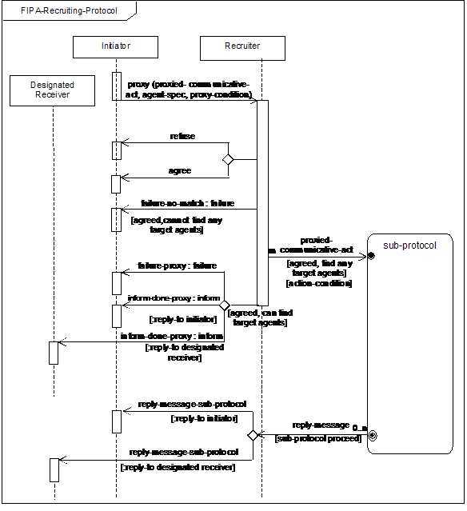
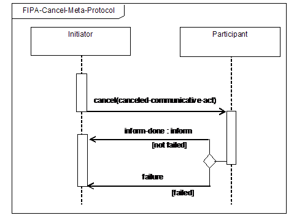

FOUNDATION FOR INTELLIGENT PHYSICAL AGENTS
FIPA Recruiting Interaction Protocol Specification
|
Document title |
FIPA Recruiting Interaction Protocol Specification |
||
|
Document number |
SC00034H |
Document source |
FIPA TC Communication |
|
Document status |
Standard |
Date of this status |
2002/12/03 |
|
Supersedes |
None |
||
|
Contact |
fab@fipa.org |
||
|
Change history |
See Informative Annex A — ChangeLog |
||
©
1996-2002 Foundation for Intelligent Physical Agents
http://www.fipa.org/
Geneva, Switzerland
|
Notice |
|
Use of the technologies described in this specification may infringe patents, copyrights or other intellectual property rights of FIPA Members and non-members. Nothing in this specification should be construed as granting permission to use any of the technologies described. Anyone planning to make use of technology covered by the intellectual property rights of others should first obtain permission from the holder(s) of the rights. FIPA strongly encourages anyone implementing any part of this specification to determine first whether part(s) sought to be implemented are covered by the intellectual property of others, and, if so, to obtain appropriate licenses or other permission from the holder(s) of such intellectual property prior to implementation. This specification is subject to change without notice. Neither FIPA nor any of its Members accept any responsibility whatsoever for damages or liability, direct or consequential, which may result from the use of this specification. |
Foreword
The Foundation for Intelligent Physical Agents (FIPA) is an international organization that is dedicated to promoting the industry of intelligent agents by openly developing specifications supporting interoperability among agents and agent-based applications. This occurs through open collaboration among its member organizations, which are companies and universities that are active in the field of agents. FIPA makes the results of its activities available to all interested parties and intends to contribute its results to the appropriate formal standards bodies where appropriate.
The members of FIPA are individually and collectively committed to open competition in the development of agent-based applications, services and equipment. Membership in FIPA is open to any corporation and individual firm, partnership, governmental body or international organization without restriction. In particular, members are not bound to implement or use specific agent-based standards, recommendations and FIPA specifications by virtue of their participation in FIPA.
The FIPA specifications are developed through direct involvement of the FIPA membership. The status of a specification can be either Preliminary, Experimental, Standard, Deprecated or Obsolete. More detail about the process of specification may be found in the FIPA Document Policy [f-out-00000] and the FIPA Specifications Policy [f-out-00003]. A complete overview of the FIPA specifications and their current status may be found on the FIPA Web site.
FIPA is a non-profit association registered in Geneva, Switzerland. As of June 2002, the 56 members of FIPA represented many countries worldwide. Further information about FIPA as an organization, membership information, FIPA specifications and upcoming meetings may be found on the FIPA Web site at http://www.fipa.org/.
Contents
1 FIPA Recruiting Interaction Protocol
1.1 Explanation of the Interaction Protocol Flow
1.2 Exceptions to Interaction Protocol Flow
3 Informative Annex A — ChangeLog
The FIPA Recruiting Interaction Protocol (IP) is designed to support recruiting interactions in mediated systems and in multi-agent systems, for example, [Finin97].
A recruiter agent is a form of broker, which, generally speaking, is an agent that offers a set of communication facilitation services to other agents using some knowledge about the requirements and capabilities of those agents. A typical example of brokering is one in which an agent can request a broker to find one or more agents who can answer a query. The broker then determines a set of appropriate agents to which to forward the query and sends the query to those agents.
In the case of recruiting (as opposed to brokering), the answers from the selected target agents either go directly back to the original requestor or to some designated receivers. The use of recruiter agents can significantly simplify the task of interaction with agents in a multi-agent system. Recruiter agents also enable a system to be adaptable and robust in dynamic situations, supporting scalability and security control at the recruiting agent.
The representation of this IP is given in Figure 1 which is based on an extension of UML 1.x. [Odell2001]. This protocol is identified by the token fipa-recruiting as the value of the protocol parameter of the ACL message.

Figure 1: FIPA Recruiting Interaction Protocol
The FIPA Recruiting Interaction Protocol (IP) is a macro IP since the proxy communicative act (see [FIPA00037]) for recruiting embeds a communicative act as its argument and so the IP for the embedded communicative act is also embedded in this IP. This embedded IP guides some parts of the remainder of the interaction, thus parts of this protocol are written very generically.
The Initiator of the recruiting interaction begins the interaction with a proxy message which contains the following: a referential expression denoting the target agents to which the recruiter should forward the communicative act, the communicative act to forward and a set of proxy conditions such as the maximum number of agents to be forwarded. The Recruiter processes the request and makes a decision whether to agree to or refuse the request, and communicates either an agree or a refuse communicative act accordingly. Communication of a refuse terminates the interaction.
Once the Recruiter has agreed to be a proxy, it then locates agents per the description from the proxy message. If no such agents can be found, the Recruiter returns a failure-no-match and the interaction terminates. Otherwise, the Recruiter may modify the list of matching agents based on the proxy-condition parameter. It then begins m interactions with the resulting list of n agents with each interaction in its own separate sub-protocol. The initiation of the sub-protocol should be done with care, using the ACL parameters (see [FIPA00061]) to correlate the responses to the request. If the Recruiter has been given a message containing a separate designated-receiver parameter from the interaction Initiator, it needs to start each sub-protocol with a reply-to parameter containing the Designated Receiver and the conversation-id of the original conversation. If the Recruiter instead is to indicate that the Initiator should receive the replies, then the reply-to parameter should designate the Initiator and the conversation-id of the recruiting conversation. Other ACL parameters may also need to be propagated.
Note that the nature of the sub-protocol and the nature of the replies are driven by the interaction protocols specified in the communicative act from the proxy message. As the sub-protocol progresses, it forwards its responses back either to the Designated Receiver or to the Initiator, depending on the value of the reply-to parameter in the proxy message. These messages are defined as reply-message-sub-protocol communications and may be either successful replies as defined by the sub-protocol or failure. If the initial proxy was an inform, there may in fact be no replies from the sub-protocol (and in fact means that the interaction is identical to a brokered inform). When the sub-protocol completes, the Recruiter forwards the final reply-message-sub-protocol from the sub-protocol and the recruiting IP terminates.
A second issue to address occurs because multiple agents may match and therefore multiple sub-protocols may be initiated by the Recruiter within the recruiting IP. In this case, the sub-protocols may be communicating multiple reply-message-sub-protocol communications from the different agents involved in the IP (for a total of m responses). This is complicated by such situations as one sub-protocol responding with a failure while a second sub-protocol returns a reply-message-sub-protocol, or the situation where results are inconsistent. The agent that receives the messages must determine how to detect and resolve such situations internally.
Any interaction using this interaction protocol is identified by a globally unique, non-null conversation-id parameter, assigned by the Initiator. The agents involved in the interaction must tag all of its ACL messages with this conversation identifier. This enables each agent to manage its communication strategies and activities, for example, it allows an agent to identify individual conversations and to reason across historical records of conversations.
In the case of 1:N interaction protocols or sub-protocols the Initiator is free to decide if the same conversation-id parameter should be used or a new one should be issued. Additionally, the messages may specify other interaction-related information such as a timeout in the reply-by parameter that denotes the latest time by which the sending agent would like to have received the next message in the protocol flow.
At any point in the IP, the receiver of a communication can inform the sender that it did not understand what was communicated. This is accomplished by returning a not-understood message. As such, Figure 1 does not depict a not-understood communication as it can occur at any point in the IP. The communication of a not-understood within an interaction protocol may terminate the entire IP and termination of the interaction may imply that any commitments made during the interaction are null and void. However, since this IP broadcasts to more than one Participant, multiple responses are also possible. Each response, then, must be evaluated separately – and some of these responses might be not-understood. However, terminating the entire IP in this case might not be appropriate, as other Participants may be continuing with their sub-protocols.
At any point in the IP, the initiator of the IP may cancel the interaction protocol by initiating the meta-protocol shown in Figure 2. The conversation-id parameter of the cancel interaction is identical to the conversation-id parameter of the interaction that the Initiator intends to cancel. The semantics of cancel should roughly be interpreted as meaning that the initiator is no longer interested in continuing the interaction and that it should be terminated in a manner acceptable to both the Initiator and the Participant. The Participant either informs the Initiator that the interaction is done using an inform-done or indicates the failure of the cancellation using a failure.

Figure 2: FIPA Cancel Meta-Protocol
This IP is a pattern for a simple interaction type. Elaboration on this pattern will almost certainly be necessary in order to specify all cases that might occur in an actual agent interaction. Real world issues such as the effects of cancelling actions, asynchrony, abnormal or unexpected IP termination, nested IPs, and the like, are explicitly not addressed here.
[Finin97] Finin, T. Labrou, Y. and Mayfield, J., KQML as an Agent Communication Language. In: Software Agents, Bradshaw, J., Ed., MIT Press, 1997.
[FIPA00037] FIPA
Communicative Act Library Specification. Foundation for Intelligent Physical
Agents, 2000.
http://www.fipa.org/specs/fipa00037/
[FIPA00061] FIPA
ACL Message Structure Specification. Foundation for Intelligent Physical
Agents, 2000.
http://www.fipa.org/specs/fipa00061/
[Odell2001] Odell, James, Van Dyke Parunak, H. and Bauer, B.,
Representing Agent Interaction Protocols in UML. In: Agent-Oriented
Software Engineering, Ciancarini, P. and Wooldridge, M., Eds., Springer, pp.
121-140, Berlin, 2001.
http://www.fipa.org/docs/input/f-in-00077/
Entire document: Changed the name Destinator to Designated Receiver
Page 1, line 42: Reworked and expanded the section description of the IP
Page 1, Figure 1: The not-understood communication was removed
Page 2, Figure 1: Used a more generic set of communicative acts which indicates that the sub-protocols are going to forward their responses (failure or references) to either the Initiator or the Designated Receiver
Page 2, Figure 1: Multiple sub-protocols indicated by inserting m and n respectively on two arcs; m sub-protocols can be started, resulting in n responses
Page 2, Figure 1: To conform to UML 2, the protocol name was placed in a boundary, x is removed from the diamonds (xor is now the default) and the template box was removed
Page 2, line 69: Added a new section on Explanation of Protocol Flow
Page 2, line 69: Reworked and expanded the section on Exceptions of Protocol Flow to incorporate a meta-protocol for cancel
Page 2, line 69: Added a paragraph explaining the not-understood communication and its relationship with the IP
Entire document: Promoted to Standard status